Scierie
| Scierie | |
 | |
 | |
| Heures d'ouverture : | 09:00 à 17:00 |
| Fermé : | Mardi, et à 16:00 le Vendredi |
| Adresse : | 24 rue des Montagnes |
| Occupants : | |
La Scierie est située dans la Montagne au nord de Pélican Ville. Robine est la charpentière de la ville et gère son magasin, dans sa maison où elle vit avec Demetrius, Maru, et Sebastian. Le magasin est ouvert la plupart des jours de 09:00 à 17:00 heures.
Robine vend des meubles, du bois et de la pierre. Elle peut améliorer votre Maison de ferme et construire de nouveaux bâtiments de ferme. Elle achète les ressources liées aux constructions,[1] à savoir l'Argile, Fibre, Bois dur, Pierre, et Bois (toutes les autres ressources sont achetées par le Forgeron).
Elle commence la construction d'un bâtiment le jour après l'achat, mais ne travaille pas les jours de festival. La plupart des constructions sont terminées en 2 jours (à partir du jour après le jour de commande). Durant la construction ou l'amélioration d'un bâtiment, Robine peut être impossible à atteindre, que ce soit pour lui parler ou lui donner un cadeau.
Fermeture du magasin
La maison est accessible de 09:00 à 20:00 heures tous les jours, même quand le magasin est fermé.
Le magasin est fermé les mardi (sauf quand il pleut), puisque Robine va au Magasin général de Pierre pour faire de l’exercice avec Caroline, Jodi, Emily, et Marnie. Cependant, elle passe par la boutique à 09:40 sur son chemin. Si vous entrez avant et cliquez sur la caisse juste quand elle passe, vous pouvez quand même commercer. La même chose se reproduit quand Robine rentre chez elle, à 20:00.
Le magasin ferme à 16:00 le vendredi, quand Robine et Demetrius vont au Saloon du fruit étoilé. Vous pouvez user du même procédé expliqué juste au dessus pour tout de même commercer avec Robine, lorsqu'elle rentre chez elle.
Le magasin est toujours fermé le jeudi 18 de l'été, quand Robine va à la Clinique d’Harvey. Elle quitte la clinique à 16:00, et passe devant son comptoir à environ 17:50. Il est possible de commercer avec elle à ce moment là.
Il est également fermé les jours de festival. Si Robine était en train de bâtir quelque chose pour vous durant l'un de ces événements, alors la construction sera retardée d'un jour. Contrairement à son magasin, elle travaille sur vos bâtiments les mardi.
Le magasin est fermé les jours où Robine travaille sur un bâtiment de votre ferme.
Inventaire de magasin
S'ajoute au Stock permanent que vend Robine quotidiennement, un stock de meubles qui change tous les jours.
Stock Permanent
Notez que le prix du bois et de la pierre augmente à l'Année 2 dans le jeu. Le joueur recevra une lettre au 1er jour du Printemps de l'Année 2 disant "Attention : Le prix des matériaux bruts chez Robine et chez Clint a augmenté.". L'argent obtenu en vendant du bois ou de la pierre à Robine ou dans le Bac d'expédition ne change pas.
| Image | Nom | Description | Prix |
|---|---|---|---|
| Bois | Un matériau végétal robuste, mais flexible, avec une grande variété d’utilisations. | Année 1: Année 2+: | |
| Pierre | Un matériau commun avec de nombreuses utilisations pour l’artisanat et la construction. | Année 1: Année 2+: | |
| Fenêtre simple | Peut se mettre à l’intérieur de votre maison. | ||
| Petite fenêtre | Peut se mettre à l’intérieur de votre maison. | ||
| Calendrier | Peut se mettre à l’intérieur de votre maison. | ||
| Table de travail | Fabriquer sur la table de travail vous donne accès aux matériaux dans les coffres adjacents. | ||
| Déchiqueteuse de bois | Insérez un morceau de bois dur pour le transformer en bois ordinaire. (Disponible après avoir reçu un courrier en Hiver) |
||
| Mini-réfrigérateur | Vous permet de stocker des ingrédients supplémentaires pour la cuisine. Disponible après la première amélioration de maison) |
||
| Téléphone | Peut être utilisé pour vérifier les heures d'ouverture du magasin et son inventaire. | ||
| Petite télé cathodique | Peut se mettre à l’intérieur de votre maison. | ||
| Télé cathodique | Peut se mettre à l’intérieur de votre maison. | ||
| Télé plasma | Peut se mettre à l’intérieur de votre maison. (Disponible après la première amélioration de maison) |
||
| Catalogue de fournitures | Donne un accès illimité à presque tous les meubles... sans quitter le confort de votre maison ! (Disponible après la première amélioration de maison) |
||
| Plante saisonnière | Une plante décorative qui change au fil des saisons. Elle n’a pas besoin d’être arrosée. | ||
| Bûche simple | Un objet décoratif pour votre ferme. | ||
| Rondin | Un objet décoratif pour votre ferme. | ||
| Cheminée en brique | Peut se mettre à l’intérieur de votre maison. | ||
| Cheminée en pierre | Peut se mettre à l’intérieur de votre maison. | ||
| Poêle | Peut se mettre à l’intérieur de votre maison. | ||
| Lit double rouge de luxe | Peut se mettre à l’intérieur de votre maison. (Disponible après avoir complété la quête spéciale "Le projet de Robine") |
||
| Lit | Peut se mettre à l’intérieur de votre maison. | ||
| Lit double | Peut se mettre à l’intérieur de votre maison. (Disponible après la première amélioration de maison) |
||
| Lit d’enfant | Peut se mettre à l’intérieur de votre maison. (Disponible après la deuxième amélioration de maison) |
||
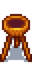 |
Recette du Brasero en bois | Un plan pour fabriquer le Brasero en bois | |
| Recette du Brasero en pierre | Un plan pour fabriquer le Brasero en pierre | ||
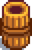 |
Recette du Brasero en forme de baril | Un plan pour fabriquer le Brasero en forme de baril | |
| Recette du Petit brasero | Un plan pour fabriquer le Petit brasero | ||
| Recette du Brasero en or | Un plan pour fabriquer le Brasero en or | ||
| Recette du Brasero sculpté | Un plan pour fabriquer le Brasero sculpté | ||
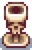 |
Recette du Brasero en forme de crâne | Un plan pour fabriquer le Brasero en forme de crâne | |
| Recette du Brasero en marbre | Un plan pour fabriquer le Brasero en marbre | ||
| Recette du Lampadaire en bois | Un plan pour fabriquer le Lampadaire en bois | ||
| Recette du Lampadaire en fer | Un plan pour fabriquer le Lampadaire en fer | ||
| Recette du Parquet | Un plan pour fabriquer le Parquet | ||
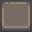 |
Recette du Sol en pierre | Un plan pour fabriquer le Sol en pierre | |
| Recette du Chemin de pierres naturelles | Un plan pour fabriquer le Chemin de pierres naturelles | ||
| Recette du Sol de paille | Un plan pour fabriquer le Sol de paille | ||
| Recette du Chemin de cristal | Un plan pour fabriquer le Chemin de cristal | ||
| Recette du Grand coffre | Un plan pour fabriquer le Grand coffre |
Stock journalier
- Voir aussi: Meubles
Les lundis, tous les objets du tableau ci-dessous sont ajoutés au stock de Robine.
| Objet | Prix |
|---|---|
| 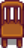 Chaise en chêne | |
Les mardis, tous les objets du tableau ci-dessous sont ajoutés au stock de Robine.
| Objet | Prix |
|---|---|
Les mercredis, tous les objets du tableau ci-dessous sont ajoutés au stock de Robine.
| Objet | Prix |
|---|---|
Les jeudis, 2 objets du tableau ci-dessous sont ajoutés aléatoirement au stock de Robine.
| Objet | Prix |
|---|---|
| 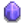 Petit cristal | |
Les vendredis, 1 objet de chaque tableau ci-dessous sont ajoutés aléatoirement au stock de Robine.
| Objet | Prix |
|---|---|
| Objet | Prix |
|---|---|
| Fauteuil rouge | |
Les samedis, 1 objet de chaque tableau ci-dessous sont ajoutés aléatoirement au stock de Robine.
| Objet | Prix |
|---|---|
| Objet | Prix |
|---|---|
Les dimanches, 1 objet de chaque tableau ci-dessous sont ajoutés aléatoirement au stock de Robine.
| Objet | Prix |
|---|---|
| Petit cristal | |
| Objet | Prix |
|---|---|
| 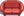 Canapé rouge | |
| 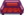 Canapé de sorcier | |
| 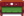 Canapé en bois |
De plus, chaque jour, 2 objets du tableau ci-dessoussont ajoutés aléatoirement au stock de Robine.
De plus, chaque jour, il y a 25% de chance qu'un objet ou plus du tableau ci-dessous soit ajouté aléatoirement au stock de Robine.
| Objet | Prix |
|---|---|
| 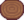 Tapis en bois | |
| 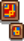 Tableaux colorés |
Bâtiments de ferme
- Pour les bâtiments magiques, voir Tour du sorcier
Les bâtiments de ferme ont plusieurs usages. Certains sont nécessaires pour l'élevage d'Animaux. La Grange et le Poulailler peuvent être améliorés afin d'accueillir davantage d'animaux. Le joueur peut faire bâtir autant de bâtiments de ferme qu'il le souhaite tant qu'il a assez de place, y compris plusieurs bâtiments du même type. Les temps de constructions requis pour chaque bâtiment sont notés dans le menu de construction.
Lors de la construction ou déplacement d'un bâtiment, les tuiles colorées indiquent si l'emplacement est libre : une tuile verte indique qu'elle est libre, et une tuile rouge indique un obstacle. Les obstacles possibles sont les rochers, branches, mauvaises herbes, et tout objet placé par le joueur, comme des meubles ou des torhces. Les seuls objets qui ne bloquent pas le placement sont les graines d'arbres, les décors de sol, et les lieux d'artefacts, mais ces objets seront détruits lorsqu'un bâtiment est placé dessus. Les animaux de ferme et les animaux de compagnie bloquent le placement d'un bâtiment, mais ils bougent si on tente de le placer dessus.
Les icones en bas à droite du menu de construction de la Scierie permettent de peindre, déplacer, ou détruire un bâtiment déjà existant. Les bâtiments de départ de la ferme (y compris la Serre et le Bac d'expédition) peuvent aussi être déplacés via ce menu. Déplacer un bâtiment est instantané et gratuit. Le contenu du bâtiment en question est sauvegardé à l'identique, il n'a pas besoin d'être vide pour être déplacé.
Astuce: Construire un Silo avant de construire une grange ou un poulailler permet au joueur d'accumuler du foin avant l'arrivée de ses premiers animaux.
| Image | Nom | Description | Contient | Coût | Taille | Temps de construction |
|---|---|---|---|---|---|---|
 |
Grange | Peut abriter jusqu’à 4 animaux. | Vaches | 7x4 |
3 jours | |
 |
Grande grange | Peut abriter jusqu’à 8 animaux. Les animaux pourront mettre bas. Débloque les chèvres. | Chèvres | 7x4 |
2 jours | |
| Grange de luxe | Peut abriter jusqu’à 12 animaux. Livré avec un système d'alimentation automatique. Débloque les moutons et les cochons. | Moutons | 7x4 |
2 jours | ||
 |
Poulailler | Peut abriter jusqu’à 4 animaux. | Poules | 6x3 |
3 jours | |
 |
Grand poulailler | Peut abriter jusqu’à 8 animaux. Livré avec un incubateur. Débloque les canards. | Canards | 6x3 |
2 jours | |
 |
Poulailler de luxe | Peut abriter jusqu’à 12 animaux. Livré avec un système d'alimentation automatique. Débloque les lapins. | Lapins | 6x3 |
2 jours | |
 |
Étang à poissons | Élevez des poissons et récoltez ce qu’ils produisent. Au fil du temps, les poissons se multiplient. | Poissons | 5x5 |
2 jours | |
 |
Moulin | Permet de faire de la farine à partir de blé et de sucre de betterave. | 4x2 |
2 jours | ||
 |
Cabanon | Une construction vide. Faites-en ce que vous voulez ! L’intérieur peut être décoré. | 7x3 |
2 jours | ||
 |
Grand cabanon | Double la taille de la remise. L'intérieur peut être décoré. | 7x3 |
2 jours | ||
 |
Silo | Permet de couper et de stocker de l’herbe pour l’alimentation des animaux. | 3x3 |
2 jours | ||
 |
Clapier pour Slime | Peut contenir jusqu’à 20 Slimes. Remplissez les abreuvoirs d'eau et les Slimes créeront des boules de Slimes | Slimes | 7x4 |
2 jours | |
 |
Étable | Vous permet de garder et de monter un cheval. Cheval inclus. | Cheval | 4x2 |
2 jours | |
 |
Puits | Un endroit pour remplir votre arrosoir. | 3x3 |
2 jours | ||
 |
Cabane | Une maison pour les amis ! Subventionnée par le fonds agricole du village. | 1 fermier dans une partie Multijoueur. | 5x3 |
Instantané | |
 |
Bac d'expédition | Mettre des objets à l’intérieur pour les vendre pendant la nuit. | 2x1 |
Instantané | ||
 |
Gamelle | Procure un foyer pour un animal de compagnie. | 1 chat, chien, ou tortue. | 2x2 |
Instantané |
Amélioration de la maison
Lors de l'amélioration de la Maison de ferme, la taille de l'empreinte du bâtiment ne change pas, donc aucune tuile adjacente n'est impactée. Les améliorations de la maison augmentent l'espace dans le bâtiment et permettent d'acquérir une cuisine pour Cuisiner.
Les améliorations de la maison requièrent trois jours afin d'être complétées.
| Image | Nom | Description | Coût |
|---|---|---|---|
.png/72px-House_(tier_2).png) |
Première amélioration | Augmente la taille de la maison et ajoute la cuisine. | |
.png/72px-House_(tier_3).png) |
Deuxième amélioration | Ajoute 2 pièces : une vide, et une avec un lit de bébé et deux lits simple. Cela vous permet d'avoir jusqu'à deux enfants. La cuisine et la chambre sont agrandis. Débloque les rénovations et la possibilité de repeindre l'extérieur. |
|
|
Troisième amélioration | Ajoute un cellier sous la maison, accessible depuis la cuisine. Le cellier permet au joueur de fabriquer et stocker des Fûts dans lesquels peuvent s'affiner certains produits (Fromage, Fromage de chèvre, Bière, Hydromel, Bière blonde, et Vin) pour améliorer leur qualité et leur valeur. |
Rénovation de la maison
Les rénovations de la maison permettent au joueur d'ajouter ou de retirer un élément de sa maison. Toutes les rénovations sont gratuites et peuvent être annulées. Les rénovations sont débloquées après la deuxième amélioration de la maison.
| Nom | Image | Description en jeu | Détails | Coût |
|---|---|---|---|---|
| Retirer le berceau | 
|
Retirer le berceau de votre maison. | Supprime le berceau nécessaire pour avoir un enfant. | Gratuit |
| Chambre ouverte | 
|
Supprime le mur séparant votre chambre et la pièce d'entrée. | Ajoute 12 tuiles d'espace à votre maison. | |
| Ajouter une pièce sud | 
|
Ajoute une pièce côté sud de votre chambre. | La pièce a une superficie de 11x7. | |
| Ajouter une pièce d'angle | 
|
Ajoute une pièce dans le coin nord-est de la maison. | La pièce a une superficie de 9x5. | |
| Ajouter une salle à manger | 
|
Ajouter une grande pièce à gauche de la cuisine. | La pièce a une superficie de 9x10 + 4x5. | |
| Ajouter une petite chambre | 
|
Ajouter une petite chambre à côté de la porte d'entrée. | Sorte de cagibi, superficie de 4x5. | |
| Ajouter un grenier | 
|
Ajouter un autre escalier et une pièce sous le toit | La pièce a une superficie de 13x5. | |
| Agrandir la pièce d'angle | 
|
Extension de la pièce d'angle, ajoutant une nouvelle grande zone. | La pièce a une superficie de 8x13 + 4x5. Augmente également la pièce d'origine de 9x5 à 10x5. |
|
| Ouvrir la salle à manger | 
|
Supprimer le mur entre la salle à manger et la cuisine. | Ajoute 12 tuiles d'espace à votre maison. |
Peinture
La maison de ferme, l'étable, et quelques autres bâtiments peuvent être peints via la Scierie en sélectionnant l'icone de peinture dans le menu de construction. Cette action est gratuite et instantanée.
- Les cabanons, granges, poulaillers et cabanes doivent être améliorées au maximum pour être peints.
- La maison de ferme doit être améliorée au maximum pour tout repeindre, sinon uniquement le toit sera disponible.
Les différentes surfaces pouvant être peintes sur les bâtiments sont montrées ci-dessous. Les joueurs peuvent peindre n'importe quelle combinaison de "building" (le corps principal, représenté en rouge), "trim" (les ornements, représentés en bleu/violet), et/ou "toit" (représenté en vert).
La sélection habituelle de couleur, saturation et transparence est disponible, et les couleurs peuvent être sauvegardées pour être appliquées à d'autres parties du bâtiment (ou à d'autres bâtiments). L'icone avec un point restaurera les couleurs par défaut.

Maison de ferme par défaut

Maison de ferme - Première amélioration

Maison de ferme - Deuxième amélioration

Grand cabanon

Poulailler de luxe

Grange de luxe

Étable

Cabane en bois

Cabane en pierre

Cabane en planches
Améliorations communautaire
Caravane
- Voir aussi : Caravane
Après avoir amélioré au maximum la Maison de ferme et complété le Centre communautaire (ou acheté le partenariat Marché Joja), le joueur peut acheter une "Amélioration communautaire" à la Scierie pour  500 000po et 950 unités de Bois. Robine va alors construire une nouvelle maison pour Pam (et Penny, si le joueur n'est pas marié avec elle). Notez que seul le joueur hôte d'une partie Multijoueur peut acheter cette amélioration.
500 000po et 950 unités de Bois. Robine va alors construire une nouvelle maison pour Pam (et Penny, si le joueur n'est pas marié avec elle). Notez que seul le joueur hôte d'une partie Multijoueur peut acheter cette amélioration.
Racourcis de la ville
Après avoir acheté l'amélioration de la caravane, le joueur pourra acheter une autre amélioration communautaire pour  300 000po. Celle-ci débloque plusieurs raccourcis à travers la Vallée permettant de s'y déplacer plus rapidement. Elle prendra trois jours à être réalisée.
300 000po. Celle-ci débloque plusieurs raccourcis à travers la Vallée permettant de s'y déplacer plus rapidement. Elle prendra trois jours à être réalisée.
- De la Forêt Sève-Cendreuse (à côté de la Maison de Leah) à La plage, un chemin le long de l'eau est dégagé, y compris à cheval. Il est ainsi possible de se rendre à la plage les jours où un festival a lieu en ville, il s'agit du seul moyen de s'y rendre sans s'y téléporter dans ce cas.
- De la Montagne (le long de la barrière à l'est de la Scierie) à Pélican Ville (au Nord du Marché Joja), un chemin le long de la rivière, trop étroit pour un cheval.
- De Pélican Ville (Sud du Musée) à la plage (entre les arbres des mares résiduelles), un chemin caché dans les fourrés, trop étroit pour un cheval.
- De l'Arrêt de bus (à côté du tunnel) à la Forêt inexploitée, des escaliers empruntables à cheval.
- De l'île sur le lac de la Montagne au Sud de la Guilde des aventuriers, une planche de bois, trop étroit pour un cheval.
(Note : Il est possible d'utiliser le raccourci menant aux mares résiduelles de la plage sans avoir réparé le pont cassé)
Vous trouverez ci-dessous les images des différents raccourcis.
| Emplacement | Avant | Après |
|---|---|---|
| Maison de Leah - La plage | 
|

|
| Montagne - Nord de Pélican Ville | 
|

|
| Sud du Musée - Mares résiduelles | 
|

|
| Escaliers dans la Forêt inexploitée | 
|

|
| Planche de bois sur l'île du lac de la Montagne | 
|
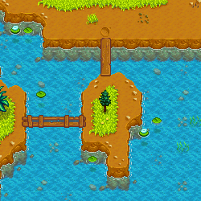 |
Anecdote
- Les carreaux du sol de la cuisine sont disposés comme un échiquier, de couleur gris et blanc. Le carreau en bas à droite est toujours un carreau blanc. Après la deuxième amélioration, tous les carreaux de ce sol inversent leur couleur.
Références
- ↑ Voir le code dans ShopMenu::setUpStoreForContext, case ScienceHouse. De manière interne, le code du jeu a deux catégories distinctes identifiées comme "Resources". La catégorie interne achetée par Robine est -16 (constant buildingResources); l'autre catégorie Resources est -15 (constant metalResources), achetée par Clint.
Galerie

Intérieur

Chambre de Sébastien
Historique
- 1.0 : Introduite.
- 1.1 : Moulin, Cabanon et la troisième amélioration de la Maison de ferme achetable ajoutés. Capacité pour Robine de déplacer des bâtiments via le menu construction ajoutée. Introduction de nouveaux et nombreux Meubles au stock tournant.
- 1.3 : Bac d'expédition, Cabanes, et l'"Amélioration Communautaire" ajoutés au menu construction. Augmentation du prix du Bois et de la Pierre à partir de l'année 2. Added Basic Log, Log Section, Brick Fireplace, Stone Fireplace, and Stove Fireplace to permanent stock.
- 1.4 : Ajout de Étang à poissons et Grand cabanon au menu de construction. Ajout de Table de travail, Déchiqueteuse de bois, Mini-réfrigérateur, et Sol en brique (Plan) au stock permanent. Prix des commodes augmenté de 1000g à 5000g (commode en acajour de 2000g à 7500g). Prix des plans des sols réduit (Parquet, Sol en pierre, & Chemin de pierres naturelles de 500g à 100g; Sol de paille & Chemin de cristal de 1000g à 200g.)
- 1.5 : Ajout des rénovations de maison ainsi que de la deuxième amélioration communautaire; nouveaux meubles. Prix de la Table de travail réduit de 3000g à 2000g. Le bac d'expédition à côté de la maison peut désormais être déplacé.
- 1.5.5 : Les bâtiments peuvent être placés sur des Lieu d'artefacts. Ils seront détruits dans cette action.
- 1.6 : Prix augmenté de la deuxième amélioration de maison, de
 50 000po à 65 000po, mais quantité de Bois dur diminuée de 150 à 100. Le Clapier pour Slime a une superficie de 7x4. Les braséros peuvent être achetés dans n'importe quel ordre. Les Cabanes ne demandent plus de ressources, juste 100po. La majorité des rénovations ne sont plus gratuites. Ajout de nouvelles rénovations. Ajout de la construction de Gamelle, avec trois variantes. Le temps de construction est maintenant visible dans le menu de construction.
50 000po à 65 000po, mais quantité de Bois dur diminuée de 150 à 100. Le Clapier pour Slime a une superficie de 7x4. Les braséros peuvent être achetés dans n'importe quel ordre. Les Cabanes ne demandent plus de ressources, juste 100po. La majorité des rénovations ne sont plus gratuites. Ajout de nouvelles rénovations. Ajout de la construction de Gamelle, avec trois variantes. Le temps de construction est maintenant visible dans le menu de construction.